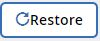

Verwalten von Wiederherstellungen mit NetApp SaaS Backup für Office 365 Bearbeiten Sie auf GitHub Dokumentänderungen anfordern
Mitwirkende
Mit NetApp SaaS Backup für Office 365 können Sie Wiederherstellungen auf hoher und detaillierter Ebene durchführen.
Standardmäßig steht nur die aktuellste Sicherung zum Wiederherstellen zur Verfügung. Sie können Ihre Sicherungseinstellungen aktualisieren, um eine bestimmte Anzahl von gesicherten Versionen einzelner Dateien beizubehalten. Wenn Sie mehr Versionen einer Datei haben, als Sie für die Sicherung angegeben haben, steht nur die Anzahl der von Ihnen angegebenen Versionen für die Wiederherstellung zur Verfügung.
- Durchführen einer Wiederherstellung auf hoher Ebene
- Durchführen einer granularen Wiederherstellung für Microsoft Exchange Online
- Durchführen einer granularen Wiederherstellung für Microsoft OneDrive for Business
- Durchführen einer detaillierten Wiederherstellung für Microsoft SharePoint Online
- Wiederherstellen von einer vorherigen Sicherung
Durchführen einer Wiederherstellung auf hoher Ebene
Gehen Sie genauso vor, um Postfächer für Microsoft Exchange Online, MySites für Microsoft OneDrive for Business, Websites für Microsoft SharePoint Online und für Microsoft Office 365-Gruppen auf hoher Ebene wiederherzustellen.
Klicken Sie im Dashboard auf die Nummer oberhalb von PROTECTED im Feld des Dienstes, für den Sie die Wiederherstellung durchführen möchten.

Wenn Sie freigegebene Postfächer für Microsoft Exchange Online wiederherstellen, klicken Sie auf die Registerkarte SHARED .
Wenn Sie Archivpostfächer für Microsoft Exchange Online wiederherstellen, klicken Sie auf die Registerkarte ARCHIVE . Hinweis: Archivpostfächer werden im regulären Postfach des Benutzers wiederhergestellt.
Wenn Sie Postfächer wiederherstellen, die nicht gemeinsam genutzt werden, bleiben Sie auf der Registerkarte USER .Wählen Sie die Elemente aus, die Sie wiederherstellen möchten.
Klicken Sie auf Wiederherstellen .
Wählen Sie eine Wiederherstellungsoption aus:
Wenn Sie Postfächer für Microsoft Exchange Online wiederherstellen, wählen Sie eine der folgenden Optionen aus:
Stellen Sie in demselben Postfach wieder her
In PST exportieren
Wenn Sie nach PST exportieren, erhalten Sie eine Benachrichtigungs-E-Mail mit dem Speicherort der PST-Datei, wenn der Export abgeschlossen ist.In einem anderen Postfach wiederherstellen
Wenn Sie ein anderes Postfach wiederherstellen, müssen Sie das Zielpostfach in das Suchfeld eingeben. Sie können einen Teil der Ziel-E-Mail-Adresse in das Suchfeld eingeben, um eine automatische Suche nach übereinstimmenden Zielpostfächern zu starten.
Wenn Sie Gruppen für Microsoft Office 365-Gruppen wiederherstellen, wählen Sie eine der folgenden Optionen aus:
In derselben Gruppe wiederherstellen
Export
Wenn Sie exportieren, wird eine PST-Datei mit Ihren Microsoft Exchange-Dateien erstellt und eine ZIP-Datei mit Ihren Microsoft SharePoint-Websites erstellt. Sie erhalten eine Benachrichtigungs-E-Mail mit dem Speicherort der PST-Datei und einer authentifizierten URL zum Speicherort der ZIP-Datei.
Wenn Sie MySites für Microsoft OneDrive for Business wiederherstellen, wählen Sie eine der folgenden Optionen aus:
Auf derselben MySite wiederherstellen
Wiederherstellen auf einer anderen MySite
Wenn Sie eine andere MySite wiederherstellen, müssen Sie das Ziel MySite in das Suchfeld eingeben. Sie können einen Teil des Ziels MySite in das Suchfeld eingeben, um eine automatische Suche nach übereinstimmenden Ziel MySites zu starten.Export
Beim Exportieren wird eine ZIP-Datei mit Ihren MySites erstellt. Sie erhalten eine Benachrichtigungs-E-Mail mit einer authentifizierten URL zum Speicherort der ZIP-Datei.
Klicken Sie auf Bestätigen .
Eine Meldung zeigt an, dass der Wiederherstellungsjob erstellt wurde.Klicken Sie auf Jobfortschritt anzeigen , um den Fortschritt der Wiederherstellung zu überwachen.
Durchführen einer detaillierten Wiederherstellung für Microsoft Exchange Online
In Microsoft Exchange Online können Sie Elemente auf Detailebene für einen einzelnen Benutzer wiederherstellen, z. B. einzelne E-Mails, Aufgaben, Kontakte und Kalenderereignisse. Sie können auch einzelne Elemente für ein Microsoft Office 365-Gruppenpostfach wiederherstellen.
Klicken Sie im Dashboard im Feld Exchange auf die Zahl PROTECTED .

Wenn Sie freigegebene Postfächer für Microsoft Exchange Online wiederherstellen, klicken Sie auf die Registerkarte SHARED .
Wenn Sie Archivpostfächer für Microsoft Exchange Online wiederherstellen, klicken Sie auf die Registerkarte ARCHIVE .
Wenn Sie reguläre Postfächer wiederherstellen, bleiben Sie auf der Registerkarte USER .Klicken Sie auf das Postfach, für das Sie die Wiederherstellung auf granularer Ebene durchführen müssen.
Wiederherstellen einer gesamten Microsoft Office Exchange-Kategorie oder Wiederherstellen eines bestimmten Elements innerhalb einer Kategorie.
Bei einem Microsoft Office 365-Gruppenpostfach haben Sie nur die Option, eine Wiederherstellung aus der E-Mail-Kategorie oder der Kalenderkategorie durchzuführen.So stellen Sie eine gesamte Kategorie wieder her:
Wählen Sie die Kategorie aus, die Sie wiederherstellen möchten.
Klicken Sie auf Wiederherstellen .
Wählen Sie eine Wiederherstellungsoption.
Stellen Sie in demselben Postfach wieder her
Wenn Sie in demselben Postfach wiederherstellen, wird standardmäßig ein Wiederherstellungsordner mit dem aktuellen Datums- und Zeitstempel am ursprünglichen Inhaltsspeicherort erstellt, der die Sicherungskopie enthält. Wenn Sie Vorhandenen Inhalt ersetzen auswählen, werden Ihre aktuellen Daten vollständig durch die Sicherung ersetzt.
Bei Microsoft Office 365-Gruppen haben Sie nur die Option, in demselben Postfach wiederherzustellen, und Sie können den vorhandenen Inhalt nicht ersetzen. Für Microsoft Exchange Online können Sie in demselben Postfach wiederherstellen und den vorhandenen Inhalt ersetzen oder in einem anderen Postfach wiederherstellen.Nur für Microsoft Exchange: Wiederherstellung in einem anderen Postfach
Wenn Sie ein anderes Postfach wiederherstellen, müssen Sie das Zielpostfach in das Suchfeld eingeben. Sie können einen Teil der Ziel-E-Mail-Adresse in das Suchfeld eingeben, um eine automatische Suche nach übereinstimmenden Zielpostfächern zu starten.Nur für Microsoft Exchange: Nach PST exportieren
Sie können auswählen, dass alle Unterordner der Kategorie eingeschlossen werden sollen.
Wenn Sie nach PST exportieren, erhalten Sie eine Benachrichtigungs-E-Mail mit dem Speicherort der PST-Datei, wenn der Export abgeschlossen ist. Hinweis: Diese Option ist für Microsoft Office 365-Gruppen nicht verfügbar.Nur für Office 365-Gruppen: Exportieren
Wenn Sie exportieren, wird eine PST-Datei mit Ihren Microsoft Exchange-Dateien erstellt, und eine ZIP-Datei wird auf Ihren Microsoft SharePoint-Websites erstellt. Sie erhalten eine Benachrichtigungs-E-Mail mit dem Speicherort der PST-Datei und einer authentifizierten URL zum Speicherort der ZIP-Datei.
Klicken Sie auf Bestätigen .
Klicken Sie auf Jobfortschritt anzeigen , um den Fortschritt der Wiederherstellung zu überwachen.
So stellen Sie ein oder mehrere bestimmte Elemente wieder her:
Klicken Sie auf die Kategorie (E-Mail, Aufgaben, Kontakte oder Sonstiges) der einzelnen Elemente, die Sie wiederherstellen möchten.
Wählen Sie die Elemente aus, die Sie wiederherstellen möchten.
Bei E-Mails können Sie einen ganzen Ordner oder bestimmte E-Mails innerhalb des Ordners wiederherstellen. Um den gesamten Ordner wiederherzustellen, wählen Sie den Ordner aus. Um einzelne E-Mails wiederherzustellen, wählen Sie den Ordner mit der E-Mail aus und wählen dann die einzelnen E-Mails innerhalb des Ordners aus.Klicken Sie auf Wiederherstellen.
Wählen Sie eine Wiederherstellungsoption aus:
Bei Microsoft Office 365-Gruppen haben Sie nur die Option, in demselben Postfach wiederherzustellen, und Sie können den vorhandenen Inhalt nicht ersetzen. Für Microsoft Exchange Online können Sie in demselben Postfach wiederherstellen und den vorhandenen Inhalt ersetzen, oder Sie können in einem anderen Postfach wiederherstellen.Stellen Sie sie in derselben Mailbox wieder her
Wenn Sie in demselben Postfach wiederherstellen, wird standardmäßig ein Wiederherstellungsordner mit dem aktuellen Datums- und Zeitstempel am ursprünglichen Speicherort des Inhalts erstellt, der die Sicherungskopie enthält. Wenn Sie Vorhandenen Inhalt ersetzen auswählen, werden Ihre aktuellen Daten vollständig durch die Sicherung ersetzt.In PST exportieren
Sie können auswählen, dass alle Unterordner der Kategorie eingeschlossen werden sollen.
Wenn Sie nach PST exportieren, erhalten Sie eine Benachrichtigungs-E-Mail mit dem Speicherort der PST-Datei, wenn der Export abgeschlossen ist. Hinweis: Diese Option ist für Microsoft Office 365-Gruppen nicht verfügbar.In einem anderen Postfach wiederherstellen
Wenn Sie ein anderes Postfach wiederherstellen, müssen Sie das Zielpostfach in das Suchfeld eingeben. Sie können einen Teil der Ziel-E-Mail-Adresse in das Suchfeld eingeben, um eine automatische Suche nach übereinstimmenden Zielpostfächern zu starten.
Klicken Sie auf Bestätigen .
Eine Meldung zeigt an, dass der Wiederherstellungsjob erstellt wurde.Klicken Sie auf Jobfortschritt anzeigen , um den Fortschritt der Wiederherstellung zu überwachen.
Durchführen einer detaillierten Wiederherstellung für Microsoft OneDrive for Business
In Microsoft OneDrive for Business können Sie Elemente auf Detailebene, z. B. einzelne Ordner oder Dateien, für eine Liste oder Bibliothek wiederherstellen.
Klicken Sie im Dashboard auf die Zahl über PROTECTED im Feld OneDrive.
Klicken Sie auf die MySite, für die Sie die Wiederherstellung auf granularer Ebene durchführen müssen.
Stellen Sie eine Gruppe von Dateien oder einzelne Dateien wieder her.
So stellen Sie eine Gruppe von Dateien wieder her:
Wählen Sie die Gruppe von Dateien.
Klicken Sie auf Wiederherstellen.
Wählen Sie eine Wiederherstellungsoption aus:
Auf derselben MySite wiederherstellen
Auf einer anderen MySite wiederherstellen
Wenn Sie eine andere MySite wiederherstellen, müssen Sie das Ziel MySite in das Suchfeld eingeben. Sie können einen Teil des Ziels MySite in das Suchfeld eingeben, um eine automatische Suche nach übereinstimmenden Ziel MySites zu starten.Export
Hinweis: Diese Option ist nicht für die Wiederherstellung einzelner Dateien verfügbar. Es ist auf Ordnerebene verfügbar. Wenn Sie einen Ordner exportieren, wird bei Bedarf eine Option zum Einschließen von Unterordnern angezeigt.
Wenn Sie exportieren, wird eine PST-Datei mit Ihren Microsoft Exchange-Dateien erstellt und eine ZIP-Datei mit Ihren Microsoft SharePoint-Websites erstellt. Sie erhalten eine Benachrichtigungs-E-Mail mit dem Speicherort der PST-Datei und einer authentifizierten URL zum Speicherort der ZIP-Datei.
Klicken Sie auf Bestätigen .
Klicken Sie auf Jobfortschritt anzeigen , um den Fortschritt der Wiederherstellung zu überwachen.
So stellen Sie eine oder mehrere einzelne Dateien wieder her:
Klicken Sie auf die Dateigruppe.
Wählen Sie die Dateien aus, die Sie wiederherstellen möchten.
Sie können einen ganzen Ordner oder bestimmte Dateien innerhalb des Ordners wiederherstellen. Um einen gesamten Ordner wiederherzustellen, wählen Sie den Ordner aus. Um eine bestimmte Datei wiederherzustellen, wählen Sie den Ordner aus, der die Datei enthält, und wählen Sie dann die einzelne Datei innerhalb des Ordners aus.Klicken Sie auf Wiederherstellen.
Wählen Sie eine Wiederherstellungsoption.
Sie können eine der folgenden Wiederherstellungsoptionen auswählen:Auf derselben MySite wiederherstellen
Wenn Sie einzelne Dateien auf derselben MySite-Site wiederherstellen, wird standardmäßig ein Wiederherstellungsordner mit dem aktuellen Datums- und Zeitstempel am ursprünglichen Speicherort des Inhalts erstellt, der die Sicherungskopie enthält. Wenn Sie Vorhandenen Inhalt ersetzen auswählen, werden Ihre aktuellen Daten vollständig durch die Sicherung ersetzt.Wiederherstellen auf einer anderen MySite
Wenn Sie eine andere MySite wiederherstellen, müssen Sie das Ziel MySite in das Suchfeld eingeben. Sie können einen Teil des Ziels MySite in das Suchfeld eingeben, um eine automatische Suche nach übereinstimmenden Ziel MySites zu starten.
Klicken Sie auf Bestätigen .
Eine Meldung zeigt an, dass der Wiederherstellungsjob erstellt wurde.Klicken Sie auf Jobfortschritt anzeigen , um den Fortschritt der Wiederherstellung zu überwachen.
Durchführen einer granularen Wiederherstellung für Microsoft SharePoint Online
In Microsoft SharePoint Online können Sie einzelne Elemente, z. B. einzelne Ordner oder Dateien, mit einzelnen Elementen wiederherstellen. Sie können auch Elemente auf granularer Ebene für eine Microsoft Office 365-Gruppensite wiederherstellen.
Klicken Sie im Dashboard im Feld SharePoint auf die Nummer PROTECTED .
Klicken Sie auf die Site, für die Sie die granulare Wiederherstellung durchführen möchten.
Stellen Sie eine gesamte Microsoft SharePoint Online-Inhaltskategorie wieder her oder stellen Sie ein bestimmtes Inhaltselement wieder her.
So stellen Sie eine gesamte Inhaltskategorie wieder her:
Wählen Sie die Kategorie aus, die Sie wiederherstellen möchten.
Klicken Sie auf Wiederherstellen.
Wählen Sie eine Wiederherstellungsoption aus:
Für Microsoft Office 365-Gruppen haben Sie nur die Möglichkeit, auf derselben Site wiederherzustellen. Für Microsoft SharePoint Online können Sie auf derselben Website oder auf einer anderen Website wiederherstellen.Wiederherstellen an derselben Site
Wenn Sie an derselben Site wiederherstellen, wird standardmäßig ein Wiederherstellungsordner mit dem aktuellen Datums- und Zeitstempel am ursprünglichen Speicherort der Datei erstellt, die die Sicherungskopie enthält. Wenn Sie die Option Mit Zusammenfügen überschreiben auswählen, wird kein Wiederherstellungsordner erstellt. Wenn die Version der Sicherungsdatei und die aktuelle Datei übereinstimmen, wird die Sicherung am ursprünglichen Speicherort wiederhergestellt. Alle neuen Inhalte im Ziel werden ignoriert und nicht beeinflusst. Wenn die Sicherung beispielsweise Datei1 Version5 enthält und das Ziel Datei1 Version 6 enthält, schlägt eine Wiederherstellung mit der ausgewählten Option " Mit Zusammenführung überschreiben" fehl. Wenn Sie die Option Vorhandenen Inhalt ersetzen auswählen, wird die aktuelle Version der Daten vollständig durch die Sicherungskopie ersetzt.Auf einer anderen Site wiederherstellen
Wenn Sie auf einer anderen Site wiederherstellen, müssen Sie die Ziel-Site in das Suchfeld eingeben. Sie können einen Teil der Website in das Suchfeld eingeben, um eine automatische Suche nach übereinstimmenden Websites zu starten.Export
Hinweis: Diese Option ist nicht für die Wiederherstellung einzelner Dateien verfügbar. Es ist auf Ordnerebene verfügbar. Wenn Sie einen Ordner exportieren, wird bei Bedarf eine Option zum Einschließen von Unterordnern angezeigt. Wenn Sie exportieren, wird eine PST-Datei mit Ihren Microsoft Exchange-Dateien erstellt und eine ZIP-Datei mit Ihren Microsoft SharePoint-Websites erstellt. Sie erhalten eine Benachrichtigungs-E-Mail mit dem Speicherort der PST-Datei und einer authentifizierten URL zum Speicherort der ZIP-Datei.
Klicken Sie auf Bestätigen .
Eine Meldung zeigt an, dass der Wiederherstellungsjob erstellt wurde.Klicken Sie auf Jobfortschritt anzeigen , um den Fortschritt der Wiederherstellung zu überwachen.
So stellen Sie ein oder mehrere bestimmte Inhaltselemente wieder her:
Klicken Sie auf die Inhaltskategorie der einzelnen Elemente, die Sie wiederherstellen möchten.
Wählen Sie die Elemente aus, die Sie wiederherstellen möchten:
Wenn Sie die aktuellste Version des Elements wiederherstellen möchten, klicken Sie auf Wiederherstellen und wählen Sie dann eine Wiederherstellungsoption aus.
Für Microsoft Office 365-Gruppen haben Sie nur die Möglichkeit, auf derselben Site wiederherzustellen. Für Microsoft SharePoint Online können Sie auf derselben Website oder auf einer anderen Website wiederherstellen.Wiederherstellen an derselben Site
Wenn Sie an derselben Site wiederherstellen, wird standardmäßig ein Wiederherstellungsordner mit dem aktuellen Datums- und Zeitstempel am ursprünglichen Speicherort der Datei erstellt, die die Sicherungskopie enthält. Wenn Sie die Option Mit Zusammenfügen überschreiben auswählen, wird kein Wiederherstellungsordner erstellt. Wenn die Version der Sicherungsdatei und die aktuelle Datei übereinstimmen, wird die Sicherung am ursprünglichen Speicherort wiederhergestellt. Alle neuen Inhalte im Ziel werden ignoriert und nicht beeinflusst. Wenn die Sicherung beispielsweise Datei1 Version5 enthält und das Ziel Datei1 Version 6 enthält, schlägt eine Wiederherstellung mit der ausgewählten Option " Mit Zusammenführung überschreiben" fehl. Wenn Sie die Option Vorhandenen Inhalt ersetzen auswählen, wird die aktuelle Version der Daten vollständig durch die Sicherungskopie ersetzt.Auf einer anderen Site wiederherstellen
Wenn Sie auf einer anderen Site wiederherstellen, müssen Sie die Ziel-Site in das Suchfeld eingeben. Sie können einen Teil der Website in das Suchfeld eingeben, um eine automatische Suche nach übereinstimmenden Websites zu starten.
Wenn Sie eine vorherige Version des Elements wiederherstellen möchten, klicken Sie auf Versionen anzeigen .
Wählen Sie die Version aus, die Sie wiederherstellen möchten.
Klicken Sie auf Wiederherstellen .
Sie können auf derselben Site oder auf einer anderen Site wiederherstellen. Wenn Sie auf einer anderen Site wiederherstellen, müssen Sie die Ziel-Site in das Suchfeld eingeben. Sie können einen Teil der Website in das Suchfeld eingeben, um eine automatische Suche nach übereinstimmenden Websites zu starten.
Klicken Sie auf Bestätigen .
Eine Meldung zeigt an, dass der Wiederherstellungsjob erstellt wurde.Klicken Sie auf Jobfortschritt anzeigen , um den Fortschritt der Wiederherstellung zu überwachen.
Wiederherstellen aus einer vorherigen Sicherung
Standardmäßig ist nur Ihre letzte Sicherung für die Wiederherstellung verfügbar.
Klicken Sie im Dashboard auf die Nummer über PROTECTED im Feld des Dienstes, für den Sie die Wiederherstellung durchführen möchten.
Wenn Sie freigegebene Postfächer für Microsoft Exchange Online wiederherstellen, klicken Sie auf die Registerkarte SHARED .
Wenn Sie Archivpostfächer für Microsoft Exchange Online wiederherstellen, klicken Sie auf die Registerkarte ARCHIVE . Hinweis: Archivpostfächer werden im regulären Postfach des Benutzers wiederhergestellt.
Wenn Sie reguläre Postfächer wiederherstellen, bleiben Sie auf der Registerkarte USER .Klicken Sie auf das Element, das Sie wiederherstellen möchten.
Klicken Sie auf Sicherungsverlauf anzeigen .
Ein Kalender wird angezeigt. Daten, für die Backups verfügbar sind, sind durch einen grünen Kreis gekennzeichnet.Wenn Sie die Elemente anzeigen möchten, die über eine bestimmte Anzahl von Tagen gesichert wurden, klicken Sie auf Ausgewählte Sicherungen anzeigen und wählen Sie im Dropdown-Menü einen der vordefinierten Tage aus.
Klicken Sie andernfalls auf das Datum der Sicherung, die Sie wiederherstellen möchten, und wählen Sie dann die betreffende Sicherung aus.
Wählen Sie die Elemente aus, die Sie wiederherstellen möchten.
Klicken Sie auf Wiederherstellen.
Wählen Sie eine Wiederherstellungsoption aus:
Wenn Sie Postfächer für Microsoft Exchange Online oder ein Postfach für eine Microsoft Office 365-Gruppe wiederherstellen, wählen Sie eine der folgenden Optionen:
Stellen Sie in demselben Postfach wieder her
Wenn Sie in demselben Postfach wiederherstellen, wird standardmäßig ein Wiederherstellungsordner mit dem aktuellen Datums- und Zeitstempel am ursprünglichen Inhaltsspeicherort erstellt, der die Sicherungskopie enthält. Wenn Sie Vorhandenen Inhalt ersetzen auswählen, werden Ihre aktuellen Daten vollständig durch die Sicherung ersetzt.In einem anderen Postfach wiederherstellen
Wenn Sie ein anderes Postfach wiederherstellen, müssen Sie das Zielpostfach in das Suchfeld eingeben. Sie können einen Teil der Ziel-E-Mail-Adresse in das Suchfeld eingeben, um eine automatische Suche nach übereinstimmenden Zielpostfächern zu starten.
Wenn Sie MySites für Microsoft OneDrive for Business wiederherstellen, wählen Sie eine der folgenden Optionen aus:
Auf derselben MySite wiederherstellen
Wenn Sie einzelne Dateien auf derselben MySite-Site wiederherstellen, wird standardmäßig ein Wiederherstellungsordner mit dem aktuellen Datums- und Zeitstempel am ursprünglichen Speicherort des Inhalts erstellt, der die Sicherungskopie enthält. Wenn Sie Vorhandenen Inhalt ersetzen auswählen, werden Ihre aktuellen Daten vollständig durch die Sicherung ersetzt. Wenn Sie einen gesamten Ordner wiederherstellen, ist die Option Ersetzen des vorhandenen Inhalts nicht verfügbar.Auf einer anderen MySite wiederherstellen
Wenn Sie eine andere MySite wiederherstellen, müssen Sie das Ziel MySite in das Suchfeld eingeben. Sie können einen Teil der Ziel-MySite in das Suchfeld eingeben, um eine automatische Suche nach übereinstimmenden Ziel-MySites zu starten.
Wenn Sie Sites für Microsoft SharePoint Online wiederherstellen, können Sie sie auf derselben Site oder auf einer anderen Site wiederherstellen. Wenn Sie eine Microsoft Office 365-Gruppensite wiederherstellen, können Sie sie nur an derselben Site wiederherstellen.
Wiederherstellen an derselben Site
Wenn Sie an derselben Site wiederherstellen, wird standardmäßig ein Wiederherstellungsordner mit dem aktuellen Datums- und Zeitstempel am ursprünglichen Speicherort der Datei erstellt, die die Sicherungskopie enthält. Wenn Sie die Option Mit Zusammenfügen überschreiben auswählen, wird kein Wiederherstellungsordner erstellt. Wenn die Version der Sicherungsdatei und die aktuelle Datei übereinstimmen, wird die Sicherung am ursprünglichen Speicherort wiederhergestellt. Alle neuen Inhalte im Ziel werden ignoriert und nicht beeinflusst. Wenn die Sicherung beispielsweise Datei1 Version5 enthält und das Ziel Datei1 Version 6 enthält, schlägt eine Wiederherstellung mit der ausgewählten Option " Mit Zusammenführung überschreiben" fehl. Wenn Sie die Option Vorhandenen Inhalt ersetzen auswählen, wird die aktuelle Version der Daten vollständig durch die Sicherungskopie ersetzt.Wiederherstellen an einer anderen Site
Wenn Sie auf einer anderen Site wiederherstellen, müssen Sie die Ziel-Site in das Suchfeld eingeben. Sie können einen Teil der Ziel-Site in das Suchfeld eingeben, um eine automatische Suche nach übereinstimmenden Sites zu starten.
Klicken Sie auf Bestätigen .
Eine Meldung zeigt an, dass der Wiederherstellungsjob erstellt wurde.Klicken Sie auf Jobfortschritt anzeigen , um den Fortschritt der Wiederherstellung zu überwachen.